Goldenness & Doraemon lover
Tengo 17 años, me gustan mucho la tecnología y las ciencias en general, pero especialmente la física. También me gusta leer novelas de crimen, suspenso, fantasía y ciencia ficción, mi escritor favorito es Haruki Murakami y el libro que más me gusta es Baila, baila, baila.
Mis animales favoritos son las chinchillas y los tigres. En mi tiempo libre suelo escuchar música, leer, ver animes, practicar guitarra o estudiar idiomas que me interesan como el tailandés. También me gustan los videojuegos y los juegos de mesa.
Series
Películas
| Artista | Canción | Álbum | Video | |
|---|---|---|---|---|
| Golden Child | Purpose | AURA | ||
| mzsrz | 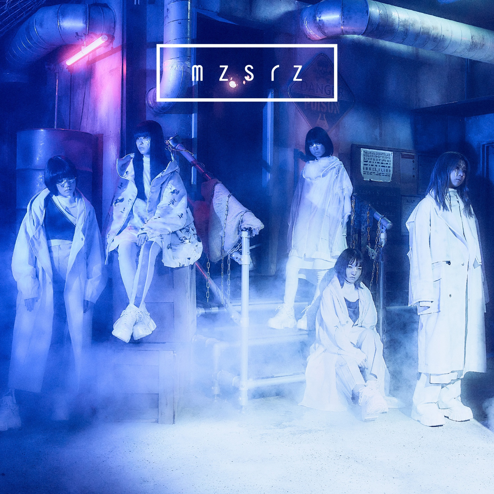 | 夜明け - DAWN | 夜明け | |
| PP Krit | 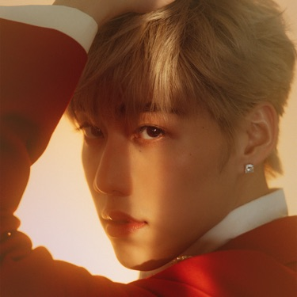 | หรูเหอ 如何 (Skyline) | OST แปลรักฉันด้วยใจเธอ | |
| 10cm | 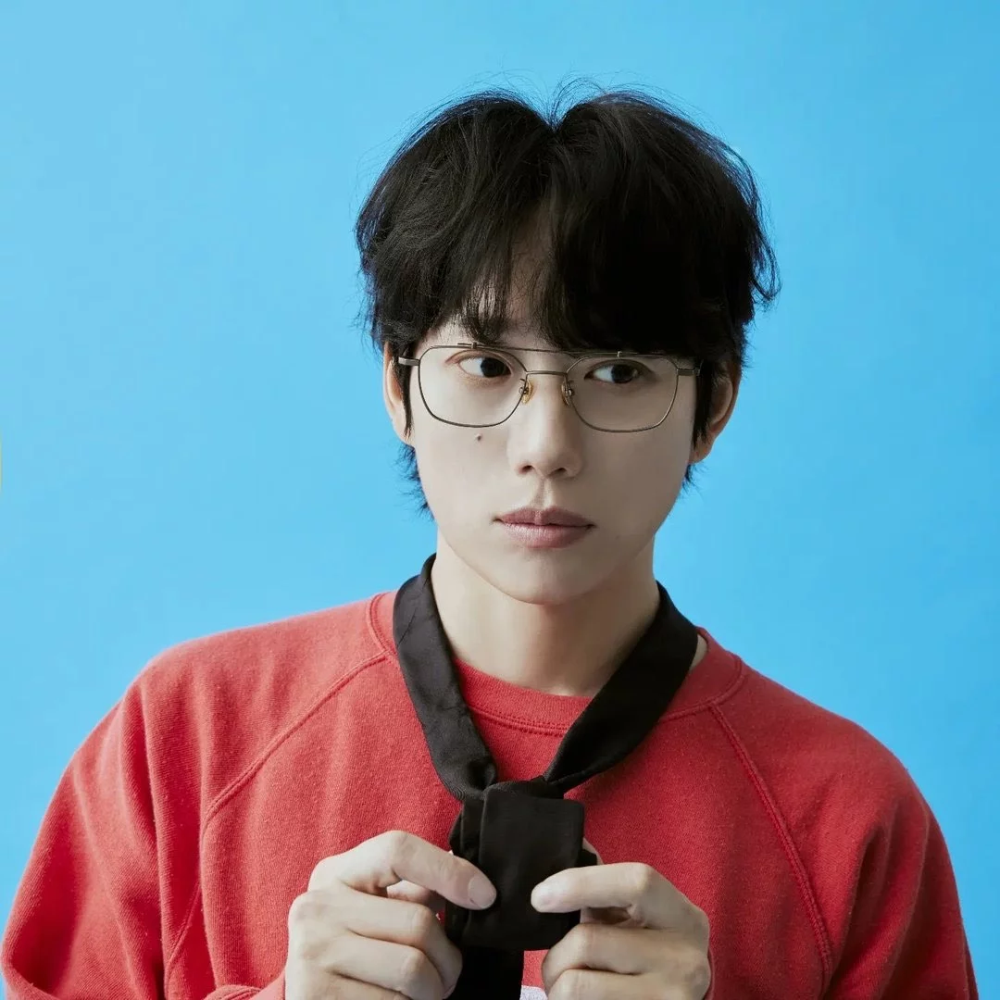 | Help | 4.0 |
| Tipo | Juego | Imagen |
|---|---|---|
| Videojuego | KartRider | 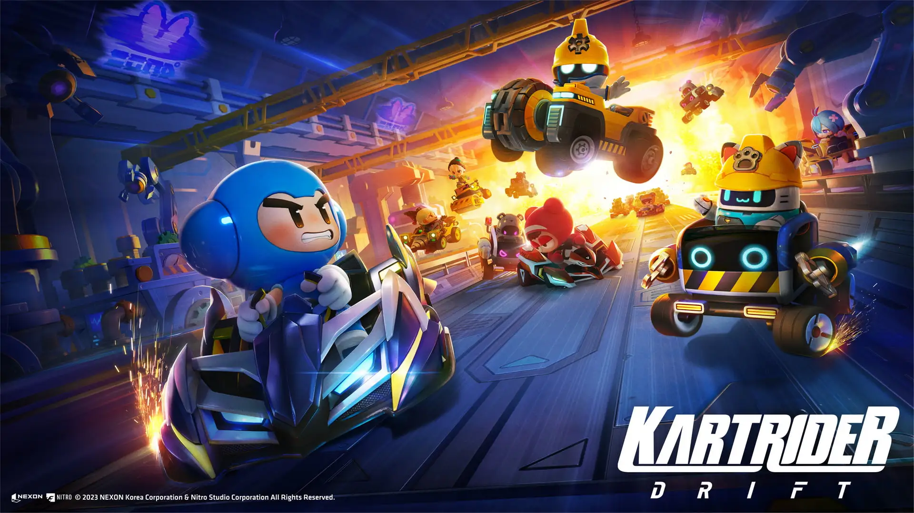 |
| Pikmin 3 | 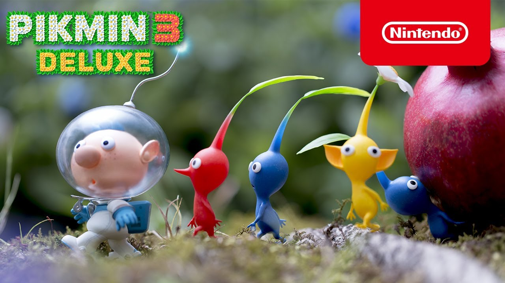 | |
| Super Mario 3D World | 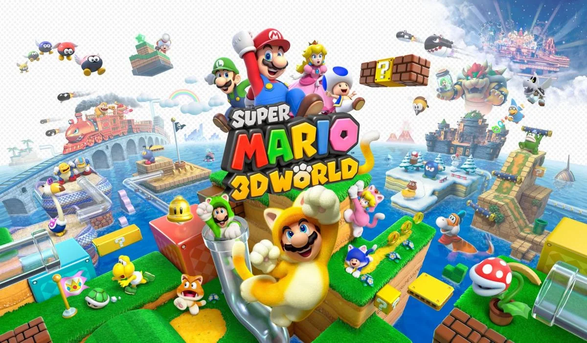 | |
| Juego de mesa | Catán | 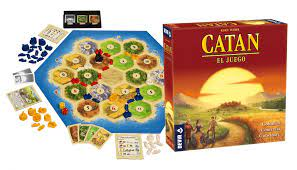 |
| King of tokyo | 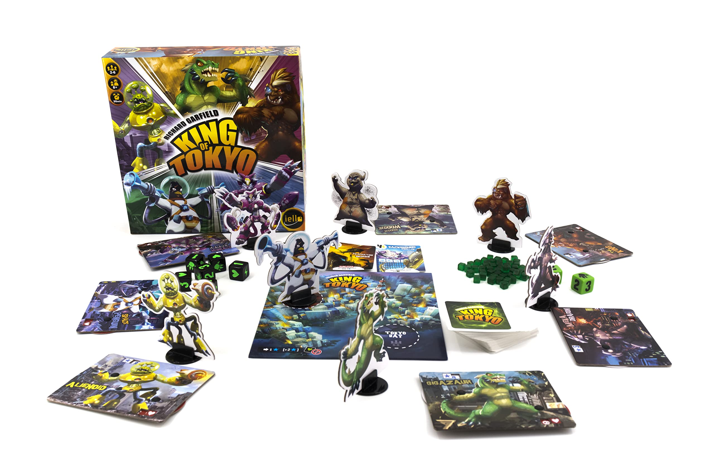 |
| Personaje | Foto | ¿Por qué me gusta? |
|---|---|---|
| Doraemon | 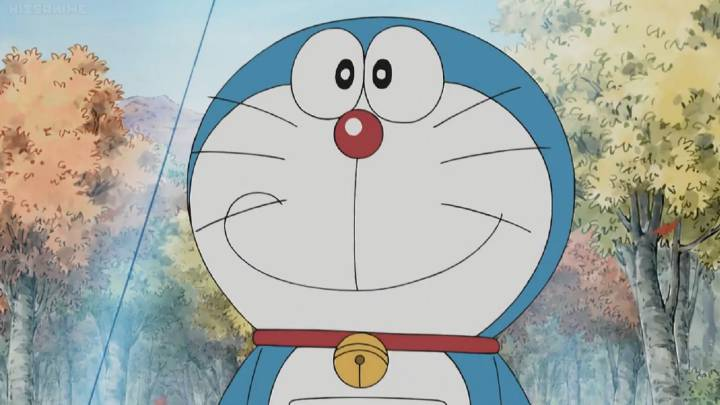 | Me parece un personaje muy interesante por sus propósitos como robot y las habilidades que tiene, principalmente en cuanto a los viajes en el tiempo y los objetos a los que tiene acceso. Además es muy amable, gracioso y carismático. |
| Uchiha Itachi | La forma en la que el personaje se va presentando y vamos conociendo su historia en Naruto así como sus habilidades, su pasado y su forma de ser, se me hacen demasiado interesantes y creo que es muy hábil en general. | |
| Wasuthorn Worachotmethee (Wave) | 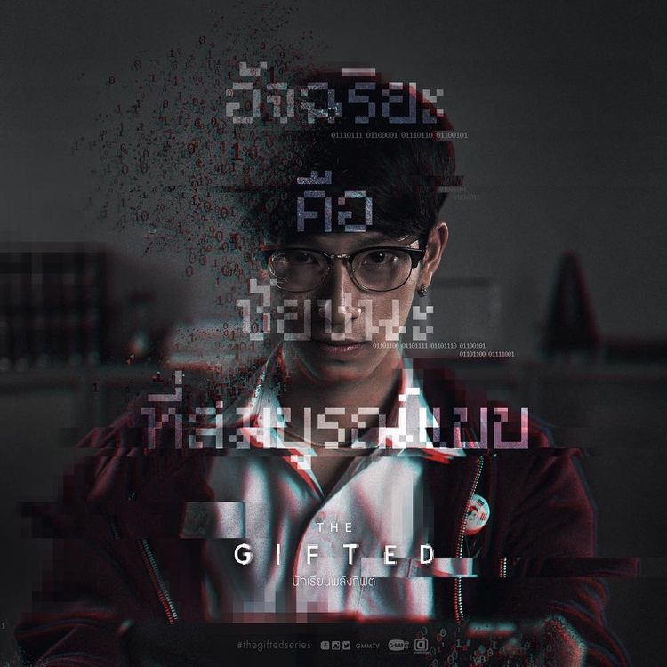 | En primera instancia éste personaje me llamó la atención porque me identifiqué con él en cuanto a las cosas de interés para pasar el tiempo y después me gustó más porque creo que durante la serie "The Gifted" tuvo un desarrollo extraordinario. Primero conocimos su historia y eso nos llevó a entenderlo y empatizar mejor con él y después fue capaz de mostrarse como sí mismo con sus intereses sobre programación, ciencia y mecánica, pero también en el aspecto social. Definitivamente el poder qeu tiene sería uno de los que más me gustaría tener. |
| Menou | 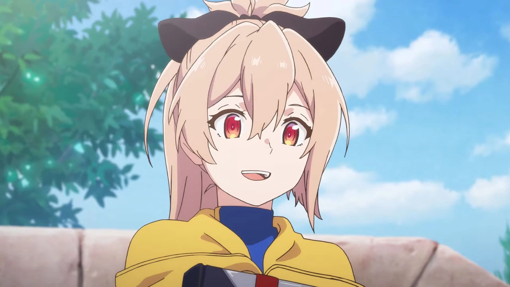 | Éste personaje de Shokei Shoujo no Virgin Road me parece muy interesante porque su principal motivo de vivir es asesinar a personas que vienen del otro mundo, pero es capaz de hacer eso porque tiene un trauma relacionado a acontecimientos de su infancia y en algún punto de su vida las personas que conoce la hacen dudar de ésta capacidad, al mismo tiempo que debe enfrentar una pelea con su mentora. |
| Dexter Morgan | Dexter es un asesino serial que vive en Maiami y trabaja como especialista en análisis de sangre sobre diversos crímenes que ocurren en la ciudad. Su particularidad como asesino es que mata sólo a criminales. Es por ésto que el personaje me resulta muy interesante ya que introduce un dilema moral sobre si es bueno o no matar a personas que han cometido actos que dañan a otras personas. |